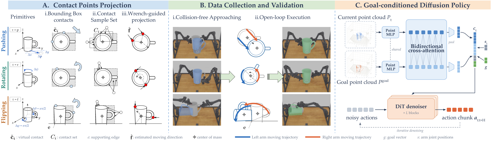
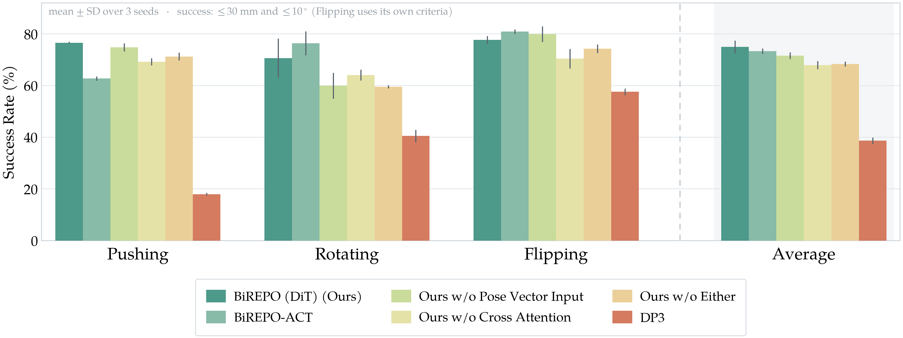

Bimanual nonprehensile manipulation enables robots to move large or irregular objects that are difficult to grasp, but reliable control remains difficult: success depends jointly on coordinated contact, object dynamics, and kinematic feasibility. Learning these behaviors from teleoperated demonstrations can be costly across diverse objects and goals. We present Bimanual REconfiguration of Poses of Objects (BiREPO), a framework for learning 3D bimanual nonprehensile primitives for pushing, rotating, and flipping objects without human teleoperation. We begin with geometry-based scripted primitives designed for regular shapes, then extend them to irregular (nonconvex) objects through a wrench-guided contact projection that maps nominal contact points onto arbitrary surfaces while satisfying nonprehensile objectives. We construct a data pipeline that validates candidate executions in simulation, and uses successful trajectories to train one goal-conditioned diffusion policy per primitive, conditioned on the current and goal object geometry and the requested pose change. In real-world experiments, BiREPO achieves 65%, 63%, and 70% success on pushing, rotating, and flipping, respectively. Furthermore, we demonstrate that the learned primitives can be chained together to achieve multi-step object pose reconfiguration.

A: Wrench-guided contact projection initializes bounding box contacts, samples nearby mesh contacts, and selects them using primitive-specific wrench objectives.
B: Contacts are executed in simulation with collision-free motions and primitive-specific open-loop trajectories; successful rollouts are retained as demonstrations.
C: A goal-conditioned diffusion policy uses current and goal point clouds, robot states, and the goal vector to generate bimanual action chunks.
The scripted primitives are defined on an object's bounding box, so running them on an irregular object means projecting the nominal contacts onto its actual surface. We compare three ways of doing that in simulation, on the same objects and the same goals: sampling contacts at random on the mesh, projecting each nominal contact along the surface normal, and our wrench-guided projection, which samples candidates near the nominal contact and keeps the pair whose combined wrench best serves the primitive's objective. Every object–goal pair is executed once per method, so the rates below compare like with like.
Demonstration generation, as reported in the paper: how many rollouts each projection needs to produce one usable demonstration, and how many objects it leaves with too few demonstrations to train on. Lower is better for both.
| Primitive | Random | Normal | Wrench-guided (ours) |
|---|---|---|---|
| Attempts per successful demonstration (APS) ↓ | |||
| Pushing | 5.4 | 4.1 | 2.1 |
| Rotating | 5.9 | 4.8 | 1.9 |
| Flipping | 3.2 | 1.6 | 1.6 |
| Objects with fewer than five demonstrations / % ↓ | |||
| Pushing | 40 | 30 | 9 |
| Rotating | 19 | 24 | 4 |
| Flipping | 16 | 6 | 6 |
50 demonstration attempts per object and projection method, over the same 100 objects.
Six objects per primitive. The three views share one camera, so a contact hidden in one is hidden in all — drag to look around it.
Four wrench-guided failures, and what the baselines did on the same episode. Coloured arrows show each contact's estimated moving direction; the grey arrow is the commanded goal. These are examples of a wider pattern: across all 170 residual push failures, 84% end with an orientation error, most failed rotations stop short of the commanded angle, and most failed flips never tip rather than toppling.
We train one goal-conditioned diffusion policy per primitive on the demonstrations the projection generates, and evaluate on in-distribution objects with unseen goals over three seeds. Alongside ablations of the goal vector and the cross-attention, we compare against DP3, adapted to our goal-conditioned setting by concatenating the current and goal point clouds with an indicator, but without cross-attention or an explicit goal vector. BiREPO reaches the highest average success rate, 74.9% against 38.7% for DP3, with the largest margins on pushing and rotating.

Each pair is one evaluation episode rolled out by both policies, with the outcome measured against the goal pose. Pick a primitive, then step through the objects.
We deploy the simulation-trained policies zero-shot on a real bimanual platform: two arms with closed parallel-jaw grippers and two RealSense D415 cameras on unseen objects. The success criteria match simulation: within 30 mm and 10° of the goal for pushing and rotating, and within 10° of the desired 90° flip, settled on the target face after the arms withdraw. Since ground-truth poses are unavailable on hardware, the final pose error comes from ICP registration of the observed point cloud to the goal.
| Primitive | Regulareasy | Regularhard | Irregulareasy | Irregularhard | All |
|---|---|---|---|---|---|
| Pushing | 20 / 25 | 16 / 25 | 16 / 25 | 13 / 25 | 65 / 100 |
| Rotating | 17 / 25 | 16 / 25 | 16 / 25 | 14 / 25 | 63 / 100 |
| Flipping | 22 / 25 | 14 / 25 | 18 / 25 | 16 / 25 | 70 / 100 |
Hard trials request pushes beyond 10 cm, rotations beyond 45°, or flips whose support edge is oblique to the world axes; easy trials are the complementary cases.
Pick an object and a primitive to see all three trials we ran on it. Clips play at 2× speed.